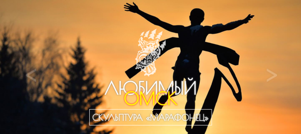
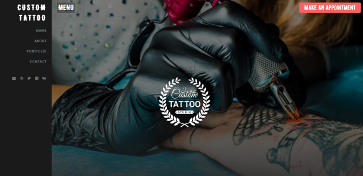
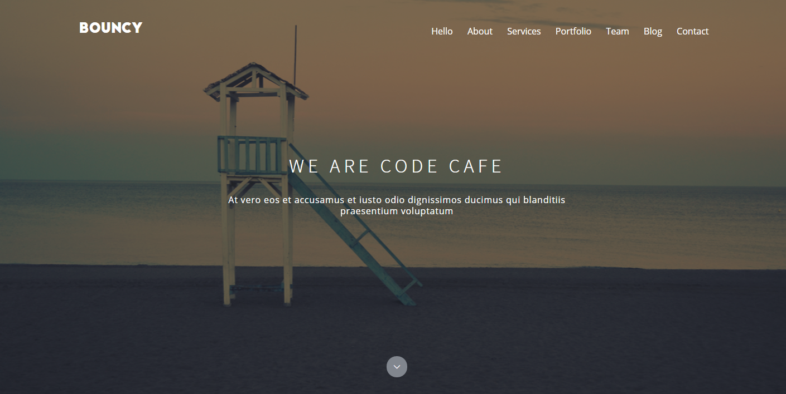

ШИРШОВ НИКОЛАЙ
HTML - верстальщик
Привет, меня зовут Коля и я хочу начать карьеру в Web development на должности HTML-верстальщика с последующим развитием до Front-end developer.
ФИО : Ширшов Николай Витальевич
Дата рождения : 27.08.1994
Контакты:
Омский Государственный Педагогический Университет
Бакалавр
Прикладная информатика
2012-2016
HTML
- Pug/Jade
- Семантическая верстка
CSS
- SASS(SCSS)
- Bootstrap 3-4
- Кроссбраузерность
- Адаптивный дизайн
JavaScript
- Gulp
- JQuery
- JSON
Ставить себе оценку по знанию той или иной технологии я не буду, т.к. это очень субъективно, уровень моих знаний и навыков вы сможете понять после просмотра портфолио.
Сайт-галерея "Любимый Омск" ver2.0
Ссылка : (everythingmaybe.github.io/favoriteomsk_ver2.0/)Исходники : (github.com/Everythingmaybe/Everythingmaybe.github.io/tree/master/favoriteomsk_ver2.0)
Описание:
Сайт-галерея "Любимый Омск" демонстрирует самые красивые места города Омска, с названием и кратким описанием этого места. Оборудован кнопками навигации по слайдам и кнопкой "название места" при нажатии на которую, появляется описание места. Этот сайт, является "моей первой попыткой" попробывать себя в верстке сайтов. Дизайн сайта придуман мной.
Используемые технологии : HTML, CSS(SASS, Flexbox), JavaScript, JSON.
Сайт "CustomTattoo"
Ссылка : (everythingmaybe.github.io/tattoostudio/)Исходники : (github.com/Everythingmaybe/Everythingmaybe.github.io/tree/master/tattoostudio)
Описание:
Сайт "CustomTattoo" является простеньким landing-page с кратким описанием вымышленого тату-салона и галерей. Являлся первой попыткой изучения Bootstrap мной. Дизайн сайта придуман мной.
Используемые технологии : HTML, CSS(Bootstrap 4), JavaScript(JQuery).
Сайт "Bouncy"
Ссылка : (everythingmaybe.github.io/new_ver2.0/)Исходники : (github.com/Everythingmaybe/Everythingmaybe.github.io/tree/master/new_ver2.0/project)
Описание:
Сайт "Bouncy" - это максимальная демонстрация моих умений на данный момент. Сайт является landing-page с тремя слайдерами, галереей и т.д. Сверстан с psd-макета найденого на просторах интернета.
Используемые технологии : HTML(Pug), CSS(SASS, Bootstrap 3 GRID), JavaScript(JQuery), Gulp.